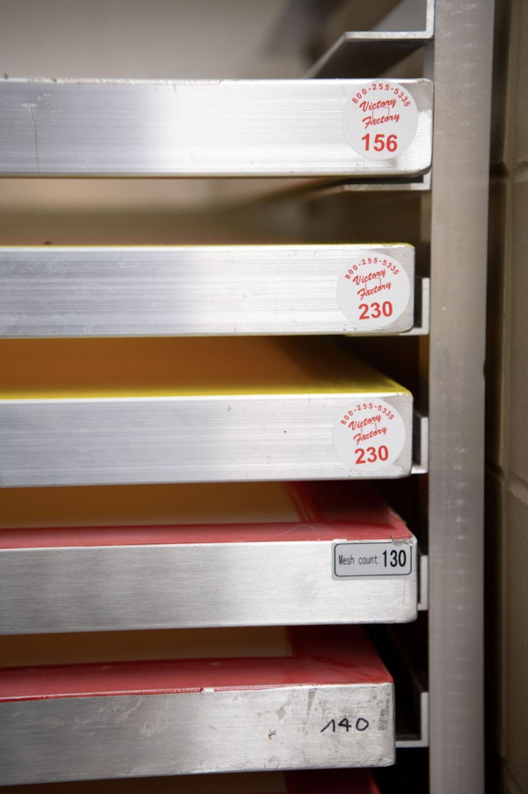
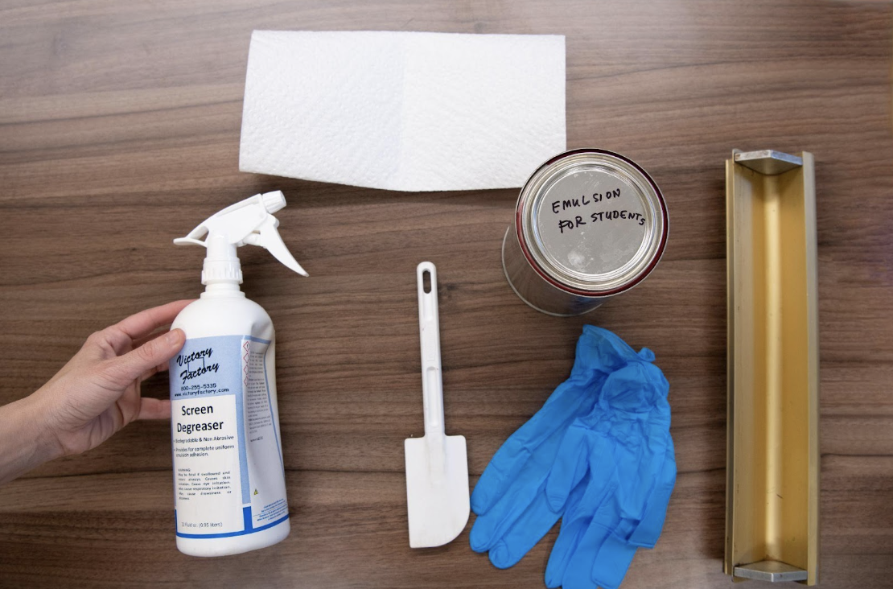
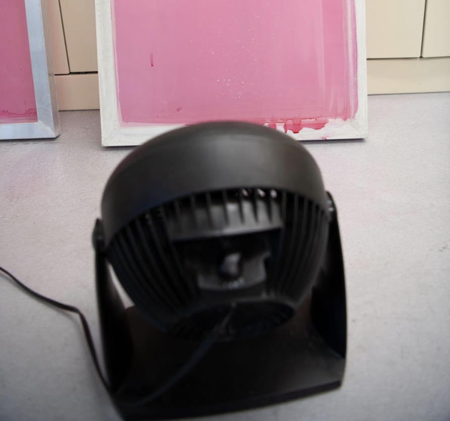
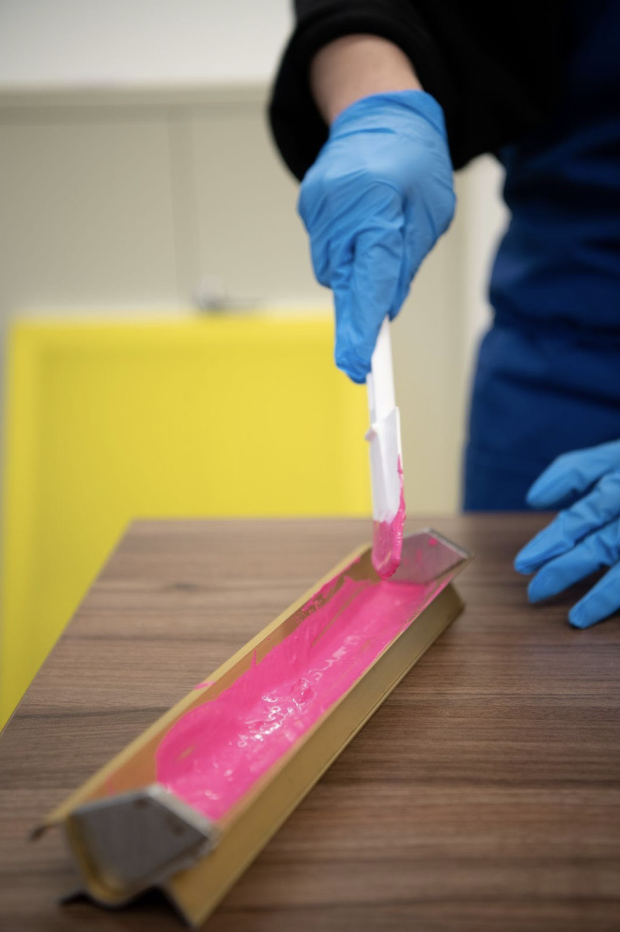

02

A
B
C
D
- Choose a mesh screen that suits the size and complexity of the design. The three mesh sizes that are common are 130, 156 and 220. Screen mesh means the amount of threads crossing per inch. 130 — Low Detail and thicker ink 156 — Standard Detail and regular ink 220 — Fine Detail or thinner ink
- Once the screen is chosen, assemble all your materials. The first step is to use the degreaser to take off any gunk on the screen. You will spray the degreaser in a wash out booth over the front and back of the screen and then use a gentle spray on the power washer to wash it out.
- Put your screen near the fan to dry completely.
- Once your screen is dry, then the screen is first coated with a thin layer of photo-sensitive emulsion using a scoop coater, a metal trough that has a clean, even edge. Take special care not to chip the edge of the scoop coater or else you won’t get a even coat.
- Gently pour the emulsion in the scoop coater, tilt the scoop coater onto the screen and in one motion pull up to coat the screen. It is best practice to pull only once.
- Place the coated screen inside a light safe cabinet and close the doors so that no light gets in. After the emulsion dries, you are ready to put your design on the screen.